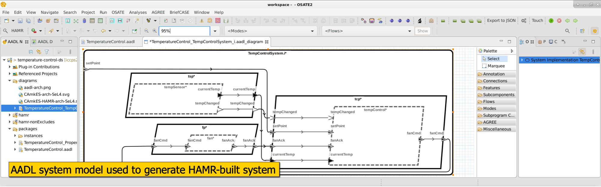
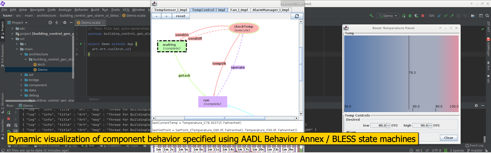
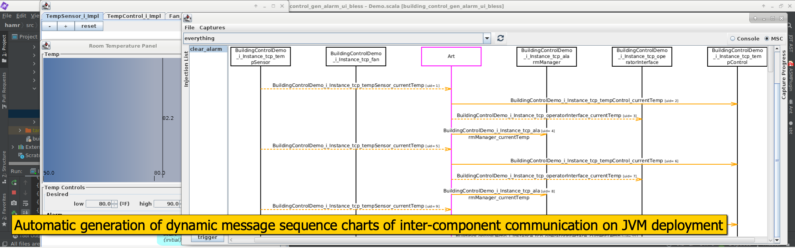
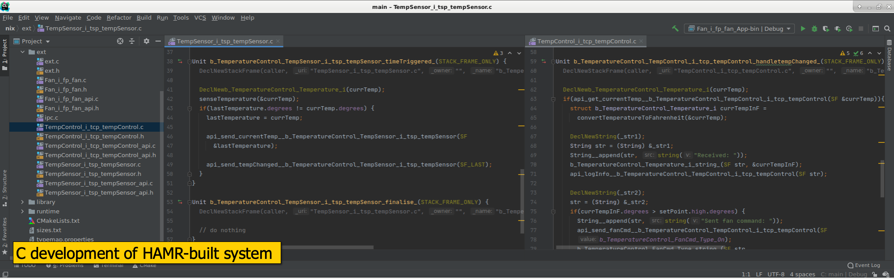
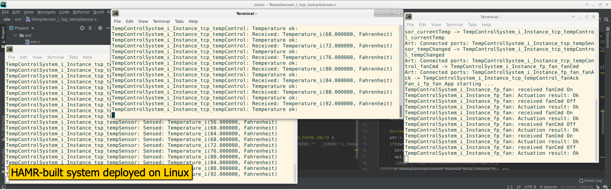
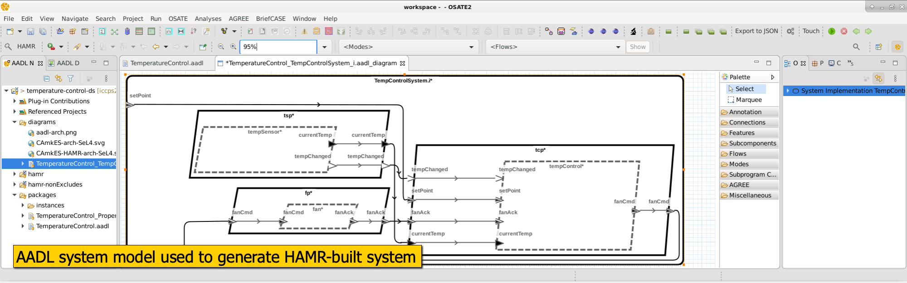
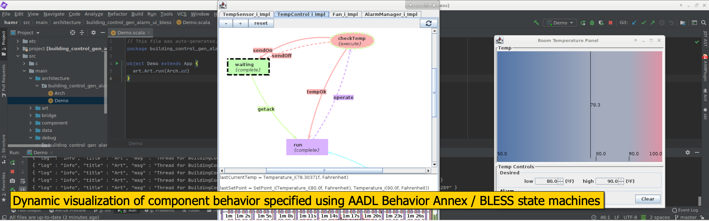
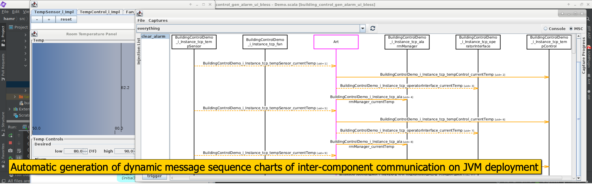
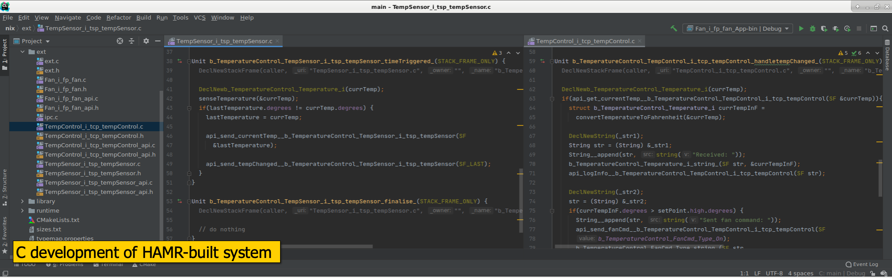
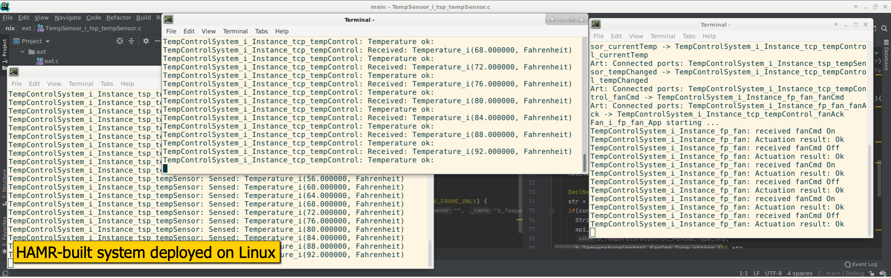

Home¶
 










About
Sireum HAMR (“[H]igh [A]ssurance [M]odeling and [R]apid engineering for embedded systems’’) is a code generation and system build framework for embedded systems whose architecture is specified using the Architecture and Analysis Definition Language (AADL). HAMR supports development of new components and wrapping of legacy components by generating code that provides interfacing infrastructure between components. Once component implementations are developed, HAMR can create deployable builds on multiple platforms including the Java Virtual Machine, Linux, and the seL4 micro-kernel.
To learn more about HAMR,
read a short HAMR Overview, then a longer HAMR Tour,
watch overview videos
browse the HAMR Documentation
HAMR is being used in several US Department of Defense research projects. The links below include information on the broader objectives of these projects,
DARPA Cyber-Assured Systems Engineering (CASE) - with Collins Aerospace (lead), Adventium Labs, and Data61. Collins Aerospace team web site: CASE Overview
HAMR is an open source project released under the Simplified BSD license.
Contact
Quick Links
Acknowledgements
Development of HAMR is supported in part by
funding agencies: DARPA, US Air Force Research Lab, US Army, and the Software Engineering Institute.
key collaborations: Collins Aerospace, Adventium Labs, and the Software Engineering Institute.